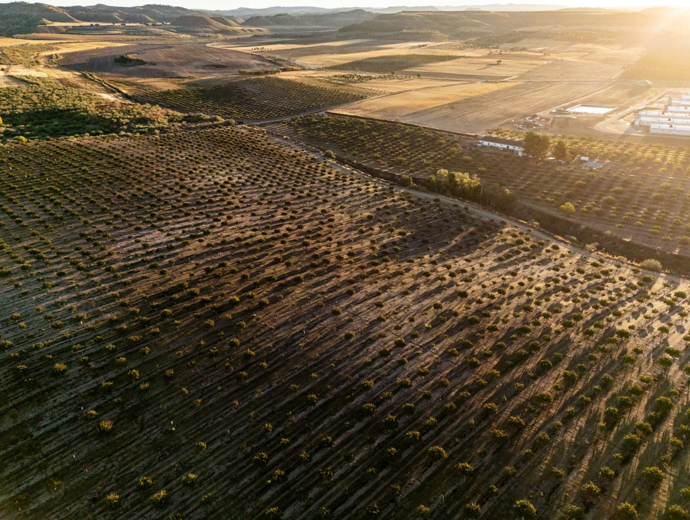
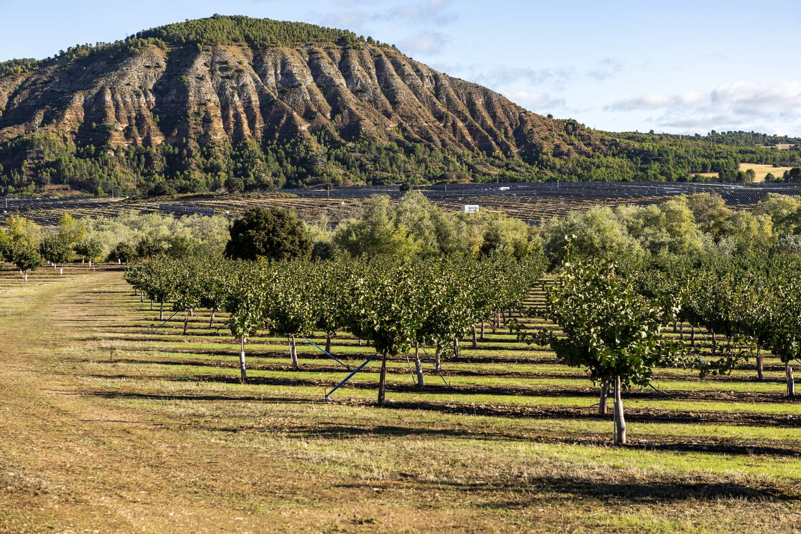
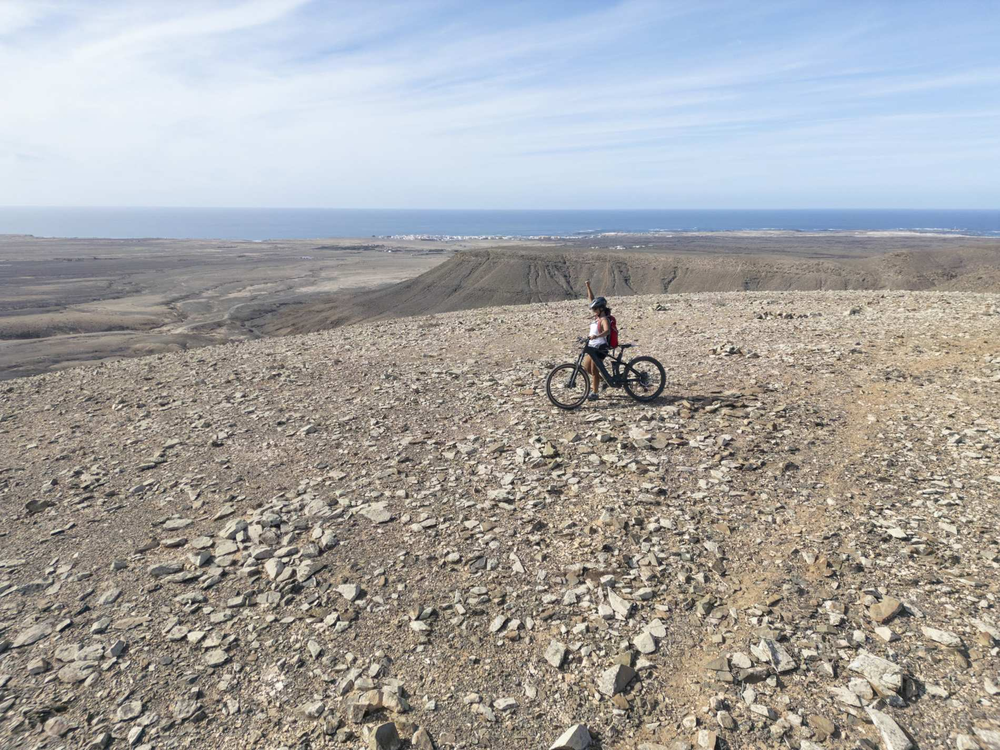
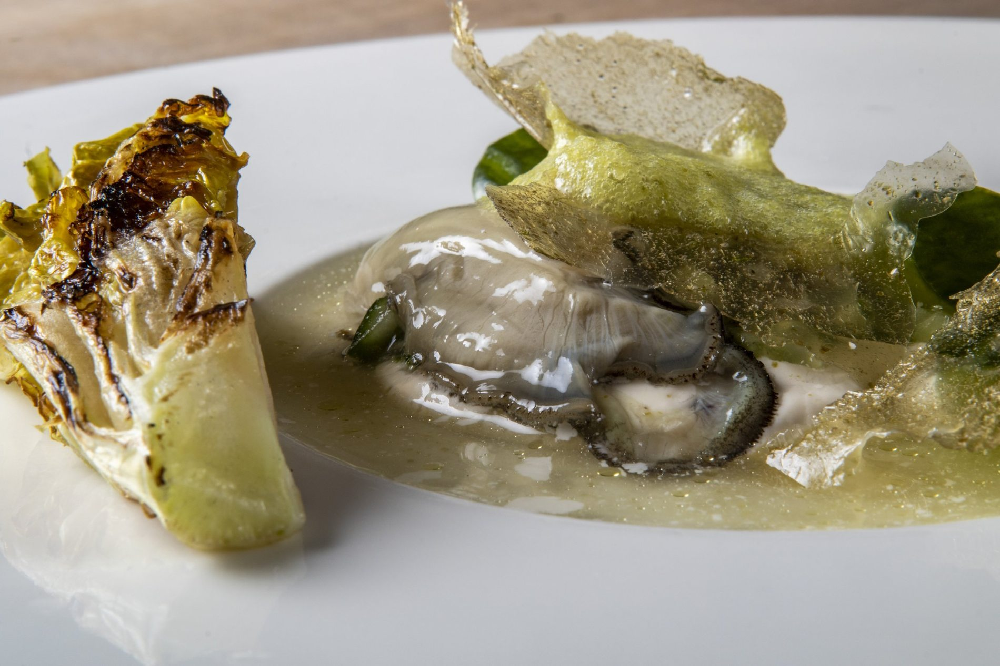

FOTOGRAFÍA · VÍDEO · CAMPAÑA
Un camino que
merece ser vivido.
Una propuesta visual para dar a conocer el Camino de la Cruz y las experiencias de Caravaca Tours.
DESCUBRIR LA PROPUESTA ↘UNA PROPUESTA PARA CARAVACA TOURS
Mostrar la experiencia
antes del primer paso.
Vuestro trabajo hace que el Camino sea más sencillo y especial para cada persona. Mi propuesta es mostrarlo con imágenes que ayuden a viajeros y agencias a entender todo lo que ofrecéis.
Viajaría al territorio para fotografiar y grabar una ruta real con vuestro equipo: el recorrido, los pueblos, los guías, las pausas y los detalles que convierten el Camino en una experiencia completa.
Podéis utilizar el material final en vuestra web, propuestas comerciales y campañas; o podemos desarrollar la campaña juntos desde la idea hasta la entrega.

UN TERRITORIO · MUCHAS FORMAS DE VIVIRLO
El recorrido,
y todo lo que pasa en él.
QUÉ PODRÍAMOS CREAR
Una historia pensada
para vuestro negocio.
Las rutas y experiencias se elegirían con vosotros, según los públicos y colaboradores a los que queráis llegar.
01El Camino, de cerca+
Fotografiar y grabar el avance de los viajeros a pie o en bicicleta: paisajes, patrimonio, encuentros y llegada a Caravaca. Una forma de enseñar lo que se vive en cada etapa.
02Vuestro acompañamiento+
Mostrar a vuestros guías y colaboradores, el traslado de equipaje y la atención a los participantes. Imágenes que ayuden a una agencia o viajero a comprender cómo funciona la experiencia.
03Sabores y personas del territorio+
Contar las pausas gastronómicas, los productos de cercanía y a las personas locales que dan vida a la ruta, trabajando con los colaboradores que vosotros propongáis.
04Contenido para vender o campaña completa+
Una colección de fotografía y vídeo para que vuestro equipo y, según lo acordado, vuestras agencias colaboradoras puedan presentar las experiencias. Si lo preferís, también podemos diseñar y producir una campaña completa.
UNA MIRADA SOBRE EL VIAJE
Paisaje, movimiento
y detalles.
Fotografías de mi portfolio anterior. Son una muestra de mi forma de trabajar; las imágenes para Caravaca Tours se producirían allí, alrededor de vuestras rutas y experiencias.


PRODUCCIÓN A MEDIDA
Vuestro conocimiento local.
Una visión compartida.
Empezamos por las rutas y los servicios que queréis promocionar. Con vuestro equipo, guías y colaboradores locales, definimos los lugares, las personas y el tiempo necesario para producirlos bien.
Podemos trabajar en una experiencia concreta o recorrer varias etapas. La producción, los materiales finales y sus usos se acuerdan según el proyecto. Juan conserva la propiedad del material original.
SOBRE JUAN AIZPURU
Una mirada personal.
Un equipo profesional.
Soy Juan Aizpuru, fotógrafo y realizador de vídeo con base en Bilbao. Tengo experiencia en fotografía de viajes, naturaleza y deporte, y puedo trabajar con mi equipo y colaboradores locales para adaptar la producción a cada proyecto.
VER MI TRABAJO ↗FITUR 2027 · MADRID
Hablemos de vuestro
próximo camino.
Me gustaría conoceros y escuchar qué experiencias queréis impulsar. A partir de ahí, podemos preparar una propuesta a vuestra medida.
DESCUBRIR MI PORTFOLIO ↗